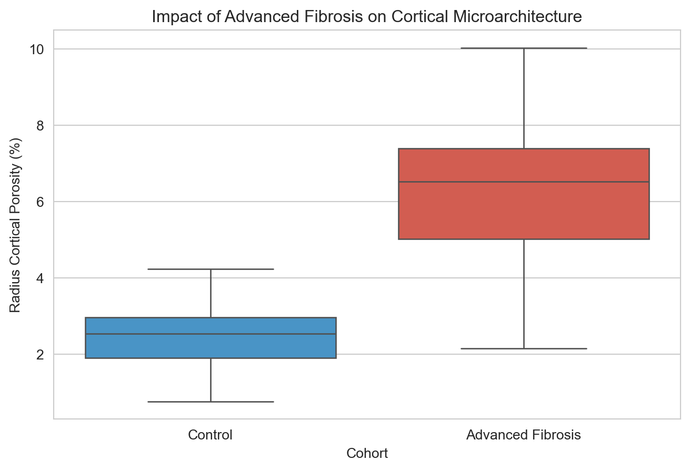

| Variable | Control | F3-F4 | P-value |
|---|---|---|---|
| Age (years) | 62.16 ± 8.97 | 59.10 ± 8.92 | 0.0904 |
| BMI (kg/m²) | 26.06 ± 5.03 | 31.25 ± 6.63 | <0.001 |
| Liver Stiffness (kPa) | 5.45 ± 1.30 | 21.29 ± 9.71 | <0.001 |
| Sclerostin (pg/mL) | 341.83 ± 57.66 | 691.64 ± 164.80 | <0.001 |
| Radius Ct.Po (%) | 2.49 ± 0.82 | 6.31 ± 1.83 | <0.001 |
| Radius Failure Load (N) | 4163.04 ± 358.11 | 2908.78 ± 642.61 | <0.001 |
Microarchitectural Deterioration and Reduced Bone Strength in MASLD: An HR-pQCT Study
Introduction
Metabolic Dysfunction-Associated Steatotic Liver Disease (MASLD) is characterized by a complex interplay of metabolic and inflammatory pathways. The liver-bone axis, mediated by factors like IGF-1 and Sclerostin, plays a critical role in maintaining skeletal integrity.
Methods
Participant Selection
A total of \(N=100\) subjects were recruited. Advanced fibrosis (F3-F4) was defined by FibroScan LSM \(\geq 12\) kPa.
HR-pQCT and FEA
The distal radius and tibia were scanned using HR-pQCT (XtremeCT). Finite Element Analysis (FEA) provided estimates of Failure Load (\(F_f\)) and Stiffness.
4. Discussion & Conclusion: discussion_conclusion.qmd
Keep this separate so you can edit your interpretations without scrolling past code.
```markdown # Discussion The observed “trabecularization” of the cortical shell in MASLD patients suggests a high-turnover state likely driven by the dysregulation of the Wnt-signaling pathway. As an endocrinologist, the reduction in hepatic IGF-1—a key osteoblastotrophic hormone—serves as the primary mechanism for the observed failure in cortical maintenance.
Conclusion
HR-pQCT identifies skeletal fragility in MASLD that is independent of aBMD.
Results
Microarchitectural Analysis
HR-pQCT analysis revealed a significant compartment-specific decay in the cortical bone. Patients with advanced fibrosis exhibited a 153.2% increase in Cortical Porosity (\(Ct.Po\)) at the distal radius compared to controls (6.31% vs. 2.49%, \(p\) < 0.001).
This ‘trabecularization’ of the cortex translated into a significant biomechanical deficit. Finite Element Analysis (FEA) estimated a mean Failure Load (\(F_f\)) of 2909 N in the fibrosis group, compared to 4163 N in the control group (\(p\) < 0.001).
Visual Analysis
Figure 1 illustrates the distribution of cortical porosity between the two groups.

Discussion
Advanced fibrosis appears to drive cortical decay via the liver-bone axis.